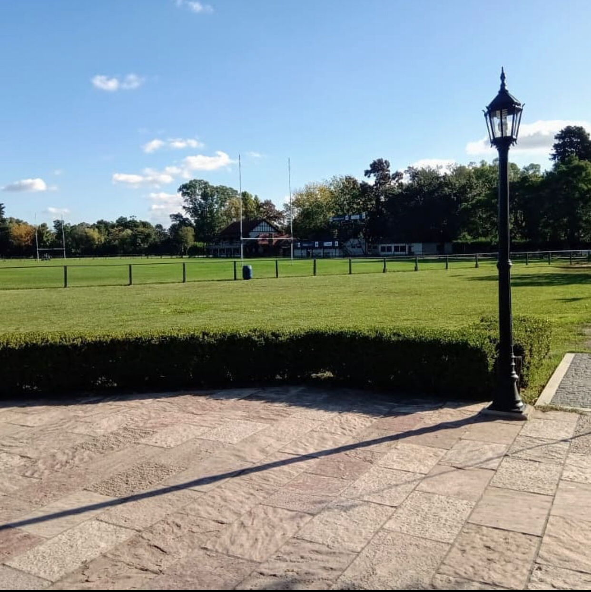
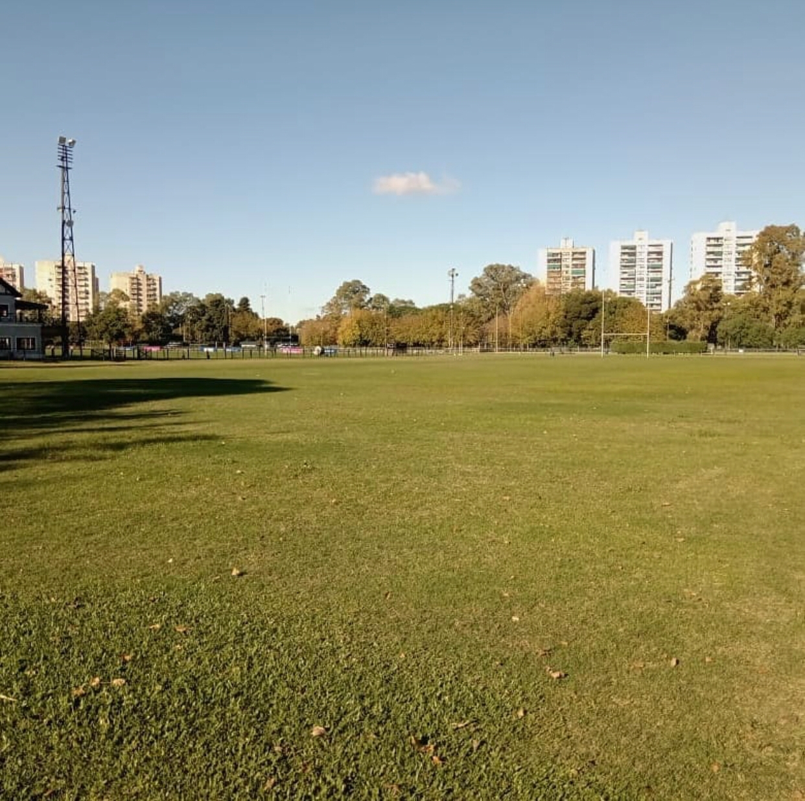
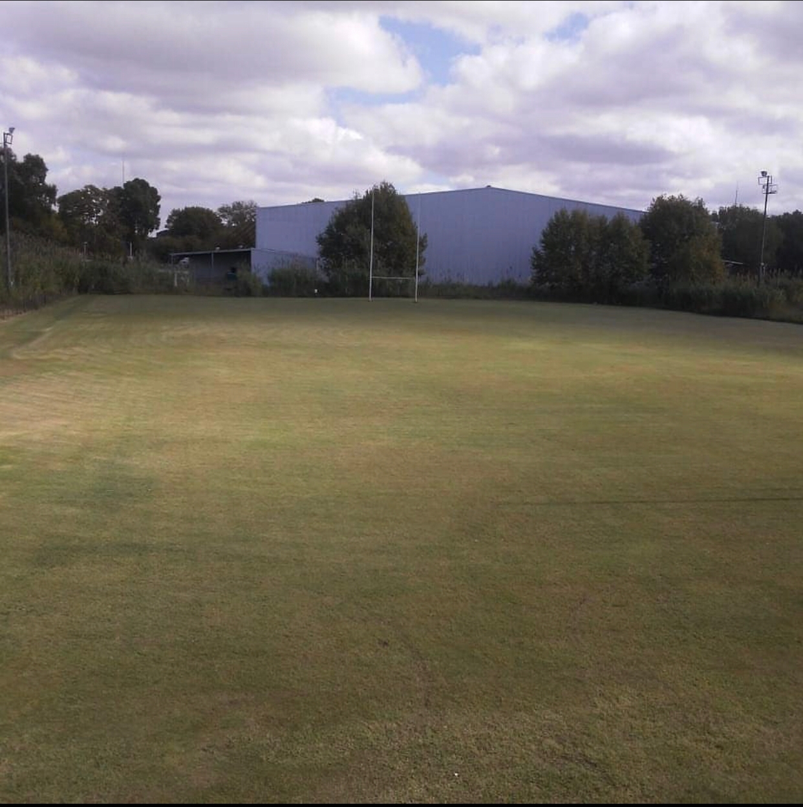

Club San Martín
Bienvenidos
- 
- 

- 
En nuestro país se juega al rugby desde hace casi ciento cincuenta años (nuestra Unión es una de las más antiguas del mundo) y en nuestro club ya llevamos más de noventa años practicándolo, con una activa participación en los torneos oficiales siempre dentro de las inquebrantables leyes del amateurismo. Actualmente participamos en todos los torneos y actividades oficiales en las disciplinas infantiles, juveniles y mayores organizados por Unión de Rugby de Buenos Aires, quien regula la actividad del deporte en el ámbito de Buenos Aires y Gran Buenos Aires, esta última se encuentra afiliada a la Unión Argentina de Rugby, que hace lo propio a nivel Nacional.
Por que Jugar al Rugby
Jugar al rugby no es sólo practicar un deporte. El rugby es mucho más que eso, es una escuela de conducta para la vida, que enseña a jugar limpio, trabajar en equipo, superar las adversidades, levantarse ante una caída, respetar al rival y a las reglas por sobre todo. En el rugby se ganan amigos para toda la vida, con los que se han compartido las alegrías de la victoria y el sinsabor de la derrota, pero sabiendo que en todos los casos se ha jugado con pasión, dejando todo en la cancha. El ganar o perder siempre será una circunstancia, lo más importante será la actitud que se ha puesto en el partido. El infaltable “Tercer Tiempo”, una tradición del rugby que se mantiene invariable, permite que se hagan nuevos amigos con los eventuales rivales, sin los cuáles, como todo jugador aprende, no sería posible divertirse. Jugando a este deporte un joven aprende a ser solidario y a valorar profundamente el privilegio de salir a la cancha con la camiseta azul, verde y blanca, un símbolo de integridad, coraje y comportamiento ético.